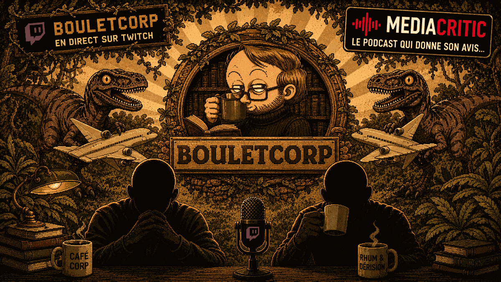

BCBoulet — de son vrai nom Gilles Roussel — c'est une figure majeure de la BD francophone. Découvert par le créateur de Titeuf, il explose au milieu des années 2000 avec ses tranches de vie publiées sur son blog, puis ses albums, ses illustrations. Il y a dix ans, il lance sa chaîne Twitch. Et ce qu'il y fait est, à première vue, difficile à vendre : il dessine. En direct. Pendant des heures.
Et pourtant, ça fonctionne. Parce que BouletCorp n'est pas un tutoriel, pas une masterclass — c'est un atelier ouvert. Boulet dessine, parle, échange avec son chat, partage ses doutes, ses réflexions sur la création, la société, ses états d'âme, la fatigue de créer. On voit un dessin prendre vie, trait par trait, tout en tchatant avec l'artiste.
Boulet dessine de tête, sans croquis préliminaire. Directement le dessin final sur la feuille. C'est exceptionnel — presque tous les professionnels passent par l'esquisse. Boulet rejoint une lignée rarissime : Cabu, Moebius, Enki Bilal, Hugo Pratt, Kim Jong Gi. Sur Twitch, c'est une véritable mise en danger publique.
Auto-dérision, blagues geek, références nerd, méta, digressions improbables. La capacité à transformer une réflexion sérieuse en vanne en une demi-seconde. Et parfois, quand on sent la fatigue pointer, ça devient encore plus drôle.
Pas de sur-excitation permanente. Pas de mise en scène artificielle. Pas de « like, subscribe, cloche ». Un temps long, calme, intelligent, où on regarde quelqu'un exercer sa passion avec honnêteté. Pour les amateurs de dessin ou de création, c'est presque thérapeutique.
Un journal de création en direct, drôle et lucide — l'improvisation totale comme mise en danger publique.
BouletCorp, ce n'est pas juste une chaîne Twitch de dessin. C'est un journal de création en direct — drôle, lucide, parfois acide ou mélancolique, souvent brillant. On y vient pour apprendre, pour se détendre, ou juste pour regarder quelqu'un faire ce qu'il aime… en se demandant à voix haute pourquoi il le fait encore après toutes ces années.
Ce qui ressort le plus : Boulet ne sacralise jamais le dessin. Pas de don magique revendiqué, pas de mise en scène du génie. De l'envie, de la curiosité, de la discipline. Et les moments d'hésitation, de blocage, de reprise à trois reprises d'un même élément sont visibles — ce qui est, pour quiconque aime dessiner ou voudrait s'y mettre, précieux et rassurant.
« Continuer à dessiner par passion, même à 50 ans. C'est peut-être ça le plus beau message de BouletCorp. » — Lolo
MediaCritic est le podcast francophone indépendant qui analyse et critique des podcasts, émissions et chaînes YouTube. Chaque semaine, Alex et Lolo décortiquent un média comme on analyserait un film — avec méthode, passion et humour. Disponible sur Spotify, Deezer, Apple Podcasts et YouTube.